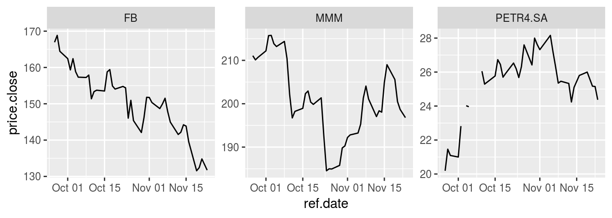

Motivation
One of the great things of working in finance is that financial datasets from capital markets are freely available from sources such as Yahoo Finance. This is an excelent feature for building up to date content for classes and conducting academic research.
In the past I have used function GetSymbols from the CRAN package quantmod in order to download end of day trade data for several stocks in the financial market. The problem in using GetSymbols is that it does not aggregate or clean the financial data for several tickers. In the usage of GetSymbols, each stock will have its own xts object with different column names and this makes it harder to store data from several tickers in a single dataframe.
Package BatchGetSymbols is my solution to this problem. Based on a list of tickers and a time period, BatchGetSymbols will download price data from yahoo finance and organize it so that you don’t need to worry about cleaning it yourself.
Main features:
- Organizes data in a tabular format, returning prices and returns
- A cache system was implemented in version 2.0, meaning that the data is saved locally and only missings portions of the data are downloaded, if needed.
- All dates are compared to a benchmark ticker such as SP500. You can choose to ignore ticker with a high number of missing dates.
- User can choose a complete/balanced dataset output. The package uses a benchmark ticker for date comparison (e.g. SP500 - ^GSPC). Days with missing prices and traded volume equal to zero are found and prices are either set to NA or replaced by closest available value.
- Allows the choice for the wide format, with tickers as columns
- Users can choose the frequency of the resulting dataset (daily, weekly, monthly, yearly)
A simple example
As a simple exercise, let’s download data for three stocks, facebook (FB), 3M (MMM), PETR4.SA (PETROBRAS) and abcdef, a ticker I just made up. We will use the last 60 days as the time period. This example will show the simple interface of the package and how it handles invalid tickers.
## Loading required package: BatchGetSymbols
## Loading required package: rvest
## Loading required package: xml2
## Loading required package: dplyr
##
## Attaching package: 'dplyr'
## The following objects are masked from 'package:stats':
##
## filter, lag
## The following objects are masked from 'package:base':
##
## intersect, setdiff, setequal, union
##
library(BatchGetSymbols)
# set dates
first.date <- Sys.Date() - 60
last.date <- Sys.Date()
freq.data <- 'daily'
# set tickers
tickers <- c('FB','MMM','PETR4.SA','abcdef')
l.out <- BatchGetSymbols(tickers = tickers,
first.date = first.date,
last.date = last.date,
freq.data = freq.data,
cache.folder = file.path(tempdir(),
'BGS_Cache') ) # cache in tempdir()
##
## Running BatchGetSymbols for:
## tickers = FB, MMM, PETR4.SA, abcdef
## Downloading data for benchmark ticker | Not Cached
## FB | yahoo (1|4) | Not Cached - Got 100% of valid prices | OK!
## MMM | yahoo (2|4) | Not Cached - Got 100% of valid prices | Feels good!
## PETR4.SA | yahoo (3|4) | Not Cached - Got 90.5% of valid prices | Looking good!
## abcdef | yahoo (4|4) | Not Cached - Error in download..
After downloading the data, we can check the success of the process for each ticker. Notice that the last ticker does not exist in yahoo finance and therefore results in an error. All information regarding the download process is provided in the dataframe df.control:
## ticker src download.status total.obs perc.benchmark.dates
## 1 FB yahoo OK 42 1.0000000
## 2 MMM yahoo OK 42 1.0000000
## 3 PETR4.SA yahoo OK 39 0.9047619
## 4 abcdef yahoo NOT OK 0 0.0000000
## threshold.decision
## 1 KEEP
## 2 KEEP
## 3 KEEP
## 4 OUT
Moreover, we can plot the daily closing prices using ggplot2:

Downloading data for all tickers in the SP500 index
The package was designed for large scale download of financial data. An example is downloading all stocks in the current composition of the SP500 stock index. The package also includes a function that downloads the current composition of the SP500 index from the internet. By using this function along with BatchGetSymbols, we can easily import end-of-day data for all assets in the index.
In the following code we download data for the SP500 stocks for the last year. The code is not executed in this vignette given its time duration, but you can just copy and paste on its own R script in order to check the results. In my computer it takes around 5 minutes to download the whole dataset.